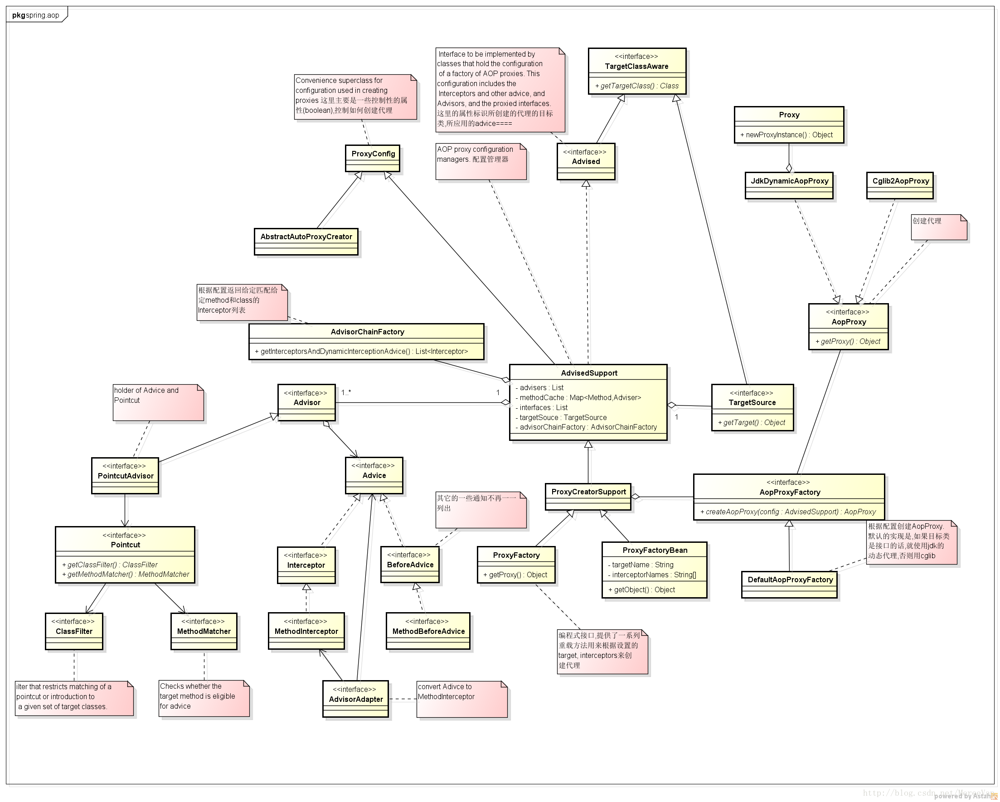

目录
什么是AOP
AOP（Aspect-OrientedProgramming，面向方面编程），可以说是OOP（Object-Oriented Programing，面向对象编程）的补充和完善。OOP引入封装、继承和多态性等概念来建立一种对象层次结构，用以模拟公共行为的一个集合。当我们需要为分散的对象引入公共行为的时候，OOP则显得无能为力。也就是说，OOP允许你定义从上到下的关系，但并不适合定义从左到右的关系。例如日志功能。日志代码往往水平地散布在所有对象层次中，而与它所散布到的对象的核心功能毫无关系。对于其他类型的代码，如安全性、异常处理和透明的持续性也是如此。这种散布在各处的无关的代码被称为横切（cross-cutting）代码，在OOP设计中，它导致了大量代码的重复，而不利于各个模块的重用。
而AOP技术则恰恰相反，它利用一种称为“横切”的技术，剖解开封装的对象内部，并将那些影响了多个类的公共行为封装到一个可重用模块，并将其名为“Aspect”，即方面。所谓“方面”，简单地说，就是将那些与业务无关，却为业务模块所共同调用的逻辑或责任封装起来，便于减少系统的重复代码，降低模块间的耦合度，并有利于未来的可操作性和可维护性。AOP代表的是一个横向的关系，如果说“对象”是一个空心的圆柱体，其中封装的是对象的属性和行为；那么面向方面编程的方法，就仿佛一把利刃，将这些空心圆柱体剖开，以获得其内部的消息。而剖开的切面，也就是所谓的“方面”了。然后它又以巧夺天功的妙手将这些剖开的切面复原，不留痕迹。
使用“横切”技术，AOP把软件系统分为两个部分：核心关注点和横切关注点。业务处理的主要流程是核心关注点，与之关系不大的部分是横切关注点。横切关注点的一个特点是，他们经常发生在核心关注点的多处，而各处都基本相似。比如权限认证、日志、事务处理。Aop 的作用在于分离系统中的各种关注点，将核心关注点和横切关注点分离开来。正如Avanade公司的高级方案构架师Adam Magee所说，AOP的核心思想就是“将应用程序中的商业逻辑同对其提供支持的通用服务进行分离。”
实现AOP的技术，主要分为两大类：一是采用动态代理技术，利用截取消息的方式，对该消息进行装饰，以取代原有对象行为的执行；二是采用静态织入的方式，引入特定的语法创建“方面”，从而使得编译器可以在编译期间织入有关“方面”的代码。
AOP使用场景
AOP用来封装横切关注点，具体可以在下面的场景中使用:
- Authentication 权限
- Caching 缓存
- Context passing 内容传递
- Error handling 错误处理
- Lazy loading 懒加载
- Debugging 调试
- logging, tracing, profiling and monitoring 记录跟踪 优化 校准
- Performance optimization 性能优化
- Persistence 持久化
- Resource pooling 资源池
- Synchronization 同步
- Transactions 事务
AOP相关概念
方面（Aspect）：一个关注点的模块化，这个关注点实现可能另外横切多个对象。事务管理是J2EE应用中一个很好的横切关注点例子。方面用spring的 Advisor或拦截器实现。
连接点（Joinpoint）: 程序执行过程中明确的点，如方法的调用或特定的异常被抛出。
通知（Advice）: 在特定的连接点，AOP框架执行的动作。各种类型的通知包括“around”、“before”和“throws”通知。通知类型将在下面讨论。许多AOP框架包括Spring都是以拦截器做通知模型，维护一个“围绕”连接点的拦截器链。Spring中定义了四个advice: BeforeAdvice, AfterAdvice, ThrowAdvice和DynamicIntroductionAdvice
切入点（Pointcut）: 指定一个通知将被引发的一系列连接点的集合。AOP框架必须允许开发者指定切入点：例如，使用正则表达式。 Spring定义了Pointcut接口，用来组合MethodMatcher和ClassFilter，可以通过名字很清楚的理解， MethodMatcher是用来检查目标类的方法是否可以被应用此通知，而ClassFilter是用来检查Pointcut是否应该应用到目标类上
引入（Introduction）: 添加方法或字段到被通知的类。 Spring允许引入新的接口到任何被通知的对象。例如，你可以使用一个引入使任何对象实现 IsModified接口，来简化缓存。Spring中要使用Introduction, 可有通过DelegatingIntroductionInterceptor来实现通知，通过DefaultIntroductionAdvisor来配置Advice和代理类要实现的接口
目标对象（Target Object）: 包含连接点的对象。也被称作被通知或被代理对象。POJO
AOP代理（AOP Proxy）: AOP框架创建的对象，包含通知。 在Spring中，AOP代理可以是JDK动态代理或者CGLIB代理。
织入（Weaving）: 组装方面来创建一个被通知对象。这可以在编译时完成（例如使用AspectJ编译器），也可以在运行时完成。Spring和其他纯Java AOP框架一样，在运行时完成织入。
Spring AOP组件
下面这种类图列出了Spring中主要的AOP组件

如何使用Spring AOP
可以通过配置文件或者编程的方式来使用Spring AOP
配置可以通过xml文件来进行，大概有四种方式：
- 配置ProxyFactoryBean，显式地设置advisors, advice, target等
- 配置AutoProxyCreator，这种方式下，还是如以前一样使用定义的bean，但是从容器中获得的其实已经是代理对象
- 通过aop:config来配置
- 通过<aop: aspectj-autoproxy>来配置，使用AspectJ的注解来标识通知及切入点
也可以直接使用ProxyFactory来以编程的方式使用Spring AOP，通过ProxyFactory提供的方法可以设置target对象, advisor等相关配置，最终通过 getProxy()方法来获取代理对象
Spring AOP代理对象的生成
Spring提供了两种方式来生成代理对象: JDKProxy和Cglib，具体使用哪种方式生成由AopProxyFactory根据AdvisedSupport对象的配置来决定。默认的策略是如果目标类是接口，则使用JDK动态代理技术，否则使用Cglib来生成代理。下面我们来研究一下Spring如何使用JDK来生成代理对象，具体的生成代码放在JdkDynamicAopProxy这个类中，直接上相关代码：1
2
3
4
5
6
7
8
9
10
11
12
13
14
15/**
* <ol>
* <li>获取代理类要实现的接口,除了Advised对象中配置的,还会加上SpringProxy, Advised(opaque=false)
* <li>检查上面得到的接口中有没有定义 equals或者hashcode的接口
* <li>调用Proxy.newProxyInstance创建代理对象
* </ol>
*/
public Object getProxy(ClassLoader classLoader) {
if (logger.isDebugEnabled()) {
logger.debug("Creating JDK dynamic proxy: target source is " +this.advised.getTargetSource());
}
Class[] proxiedInterfaces =AopProxyUtils.completeProxiedInterfaces(this.advised);
findDefinedEqualsAndHashCodeMethods(proxiedInterfaces);
return Proxy.newProxyInstance(classLoader, proxiedInterfaces, this);
}
下面的问题是，代理对象生成了，那切面是如何织入的？
我们知道InvocationHandler是JDK动态代理的核心，生成的代理对象的方法调用都会委托到InvocationHandler.invoke()方法。而通过JdkDynamicAopProxy的签名我们可以看到这个类其实也实现了InvocationHandler，下面我们就通过分析这个类中实现的invoke()方法来具体看下Spring AOP是如何织入切面的。1
2
3
4
5
6
7
8
9
10
11
12
13
14
15
16
17
18
19
20
21
22
23
24
25
26
27
28
29
30
31
32
33
34
35
36
37
38
39
40
41
42
43
44
45
46
47
48
49
50
51
52
53
54
55
56
57
58
59
60
61
62
63
64
65
66
67
68
69
70
71
72
73publicObject invoke(Object proxy, Method method, Object[] args) throwsThrowable {
MethodInvocation invocation = null;
Object oldProxy = null;
boolean setProxyContext = false;
TargetSource targetSource = this.advised.targetSource;
Class targetClass = null;
Object target = null;
try {
//eqauls()方法，具目标对象未实现此方法
if (!this.equalsDefined && AopUtils.isEqualsMethod(method)){
return (equals(args[0])? Boolean.TRUE : Boolean.FALSE);
}
//hashCode()方法，具目标对象未实现此方法
if (!this.hashCodeDefined && AopUtils.isHashCodeMethod(method)){
return newInteger(hashCode());
}
//Advised接口或者其父接口中定义的方法,直接反射调用,不应用通知
if (!this.advised.opaque &&method.getDeclaringClass().isInterface()
&&method.getDeclaringClass().isAssignableFrom(Advised.class)) {
// Service invocations onProxyConfig with the proxy config...
return AopUtils.invokeJoinpointUsingReflection(this.advised,method, args);
}
Object retVal = null;
if (this.advised.exposeProxy) {
// Make invocation available ifnecessary.
oldProxy = AopContext.setCurrentProxy(proxy);
setProxyContext = true;
}
//获得目标对象的类
target = targetSource.getTarget();
if (target != null) {
targetClass = target.getClass();
}
//获取可以应用到此方法上的Interceptor列表
List chain = this.advised.getInterceptorsAndDynamicInterceptionAdvice(method,targetClass);
//如果没有可以应用到此方法的通知(Interceptor)，此直接反射调用 method.invoke(target, args)
if (chain.isEmpty()) {
retVal = AopUtils.invokeJoinpointUsingReflection(target,method, args);
} else {
//创建MethodInvocation
invocation = newReflectiveMethodInvocation(proxy, target, method, args, targetClass, chain);
retVal = invocation.proceed();
}
// Massage return value if necessary.
if (retVal != null && retVal == target &&method.getReturnType().isInstance(proxy)
&&!RawTargetAccess.class.isAssignableFrom(method.getDeclaringClass())) {
// Special case: it returned"this" and the return type of the method
// is type-compatible. Notethat we can't help if the target sets
// a reference to itself inanother returned object.
retVal = proxy;
}
return retVal;
} finally {
if (target != null && !targetSource.isStatic()) {
// Must have come fromTargetSource.
targetSource.releaseTarget(target);
}
if (setProxyContext) {
// Restore old proxy.
AopContext.setCurrentProxy(oldProxy);
}
}
}
主流程可以简述为：获取可以应用到此方法上的通知链（Interceptor Chain）,如果有,则应用通知,并执行joinpoint; 如果没有,则直接反射执行joinpoint。而这里的关键是通知链是如何获取的以及它又是如何执行的，下面逐一分析下。1
2
3
4
5
6
7
8
9
10public List<Object> getInterceptorsAndDynamicInterceptionAdvice(Method method, Class targetClass) {
MethodCacheKeycacheKey = new MethodCacheKey(method);
List<Object>cached = this.methodCache.get(cacheKey);
if(cached == null) {
cached= this.advisorChainFactory.getInterceptorsAndDynamicInterceptionAdvice(
this,method, targetClass);
this.methodCache.put(cacheKey,cached);
}
returncached;
}
可以看到实际的获取工作其实是由AdvisorChainFactory. getInterceptorsAndDynamicInterceptionAdvice()这个方法来完成的，获取到的结果会被缓存。
下面来分析下这个方法的实现：1
2
3
4
5
6
7
8
9
10
11
12
13
14
15
16
17
18
19
20
21
22
23
24
25
26
27
28
29
30
31
32
33
34
35
36
37
38
39
40
41
42
43
44
45
46
47
48
49
50
51
52
53
54
55/**
* 从提供的配置实例config中获取advisor列表,遍历处理这些advisor.如果是IntroductionAdvisor,
* 则判断此Advisor能否应用到目标类targetClass上.如果是PointcutAdvisor,则判断
* 此Advisor能否应用到目标方法method上.将满足条件的Advisor通过AdvisorAdaptor转化成Interceptor列表返回.
*/
publicList getInterceptorsAndDynamicInterceptionAdvice(Advised config, Methodmethod, Class targetClass) {
// This is somewhat tricky... we have to process introductions first,
// but we need to preserve order in the ultimate list.
List interceptorList = new ArrayList(config.getAdvisors().length);
//查看是否包含IntroductionAdvisor
boolean hasIntroductions = hasMatchingIntroductions(config,targetClass);
//这里实际上注册一系列AdvisorAdapter,用于将Advisor转化成MethodInterceptor
AdvisorAdapterRegistry registry = GlobalAdvisorAdapterRegistry.getInstance();
Advisor[] advisors = config.getAdvisors();
for (int i = 0; i <advisors.length; i++) {
Advisor advisor = advisors[i];
if (advisor instanceof PointcutAdvisor) {
// Add it conditionally.
PointcutAdvisor pointcutAdvisor= (PointcutAdvisor) advisor;
if(config.isPreFiltered() ||pointcutAdvisor.getPointcut().getClassFilter().matches(targetClass)) {
//TODO: 这个地方这两个方法的位置可以互换下
//将Advisor转化成Interceptor
MethodInterceptor[]interceptors = registry.getInterceptors(advisor);
//检查当前advisor的pointcut是否可以匹配当前方法
MethodMatcher mm =pointcutAdvisor.getPointcut().getMethodMatcher();
if (MethodMatchers.matches(mm,method, targetClass, hasIntroductions)) {
if(mm.isRuntime()) {
// Creating a newobject instance in the getInterceptors() method
// isn't a problemas we normally cache created chains.
for (intj = 0; j < interceptors.length; j++) {
interceptorList.add(new InterceptorAndDynamicMethodMatcher(interceptors[j],mm));
}
} else {
interceptorList.addAll(Arrays.asList(interceptors));
}
}
}
} else if (advisor instanceof IntroductionAdvisor){
IntroductionAdvisor ia =(IntroductionAdvisor) advisor;
if(config.isPreFiltered() || ia.getClassFilter().matches(targetClass)) {
Interceptor[] interceptors= registry.getInterceptors(advisor);
interceptorList.addAll(Arrays.asList(interceptors));
}
} else {
Interceptor[] interceptors =registry.getInterceptors(advisor);
interceptorList.addAll(Arrays.asList(interceptors));
}
}
return interceptorList;
}
这个方法执行完成后，Advised中配置能够应用到连接点或者目标类的Advisor全部被转化成了MethodInterceptor.
接下来我们再看下得到的拦截器链是怎么起作用的。1
2
3
4
5
6
7if (chain.isEmpty()) {
retVal = AopUtils.invokeJoinpointUsingReflection(target,method, args);
} else {
//创建MethodInvocation
invocation = newReflectiveMethodInvocation(proxy, target, method, args, targetClass, chain);
retVal = invocation.proceed();
}
从这段代码可以看出，如果得到的拦截器链为空，则直接反射调用目标方法，否则创建MethodInvocation，调用其proceed方法，触发拦截器链的执行，来看下具体代码1
2
3
4
5
6
7
8
9
10
11
12
13
14
15
16
17
18
19
20
21
22
23
24
25
26
27
28
29
30
31
32
33public Object proceed() throws Throwable {
// We start with an index of -1and increment early.
if (this.currentInterceptorIndex == this.interceptorsAndDynamicMethodMatchers.size()- 1) {
//如果Interceptor执行完了，则执行joinPoint
return invokeJoinpoint();
}
Object interceptorOrInterceptionAdvice =
this.interceptorsAndDynamicMethodMatchers.get(++this.currentInterceptorIndex);
//如果要动态匹配joinPoint
if (interceptorOrInterceptionAdvice instanceof InterceptorAndDynamicMethodMatcher){
// Evaluate dynamic method matcher here: static part will already have
// been evaluated and found to match.
InterceptorAndDynamicMethodMatcher dm =
(InterceptorAndDynamicMethodMatcher)interceptorOrInterceptionAdvice;
//动态匹配：运行时参数是否满足匹配条件
if (dm.methodMatcher.matches(this.method, this.targetClass,this.arguments)) {
//执行当前Intercetpor
returndm.interceptor.invoke(this);
}
else {
//动态匹配失败时,略过当前Intercetpor,调用下一个Interceptor
return proceed();
}
}
else {
// It's an interceptor, so we just invoke it: The pointcutwill have
// been evaluated statically before this object was constructed.
//执行当前Intercetpor
return ((MethodInterceptor) interceptorOrInterceptionAdvice).invoke(this);
}
}